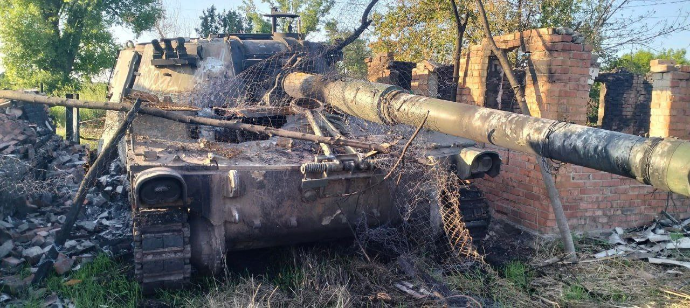
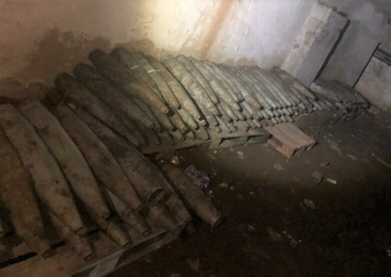
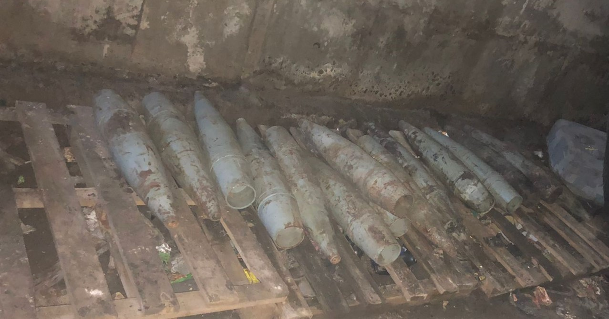
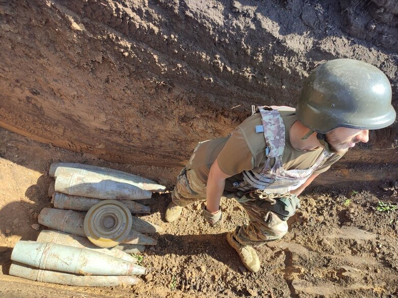
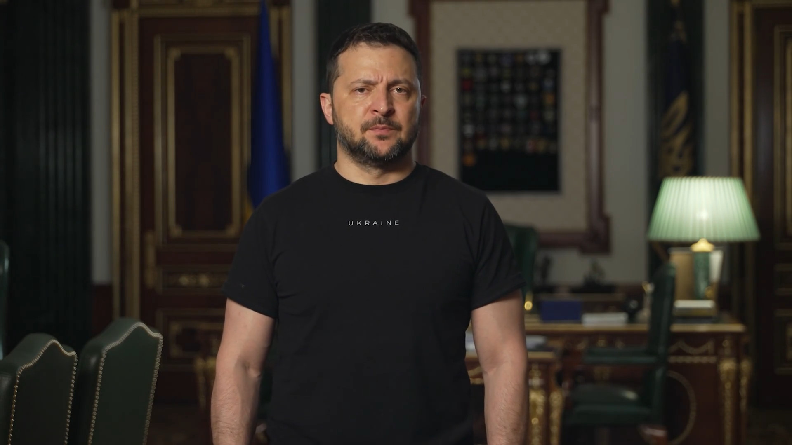

Prigozhin, Rus hükümetinin PMC'leri durdurmaya çalışmaları halinde "etraflarındaki her şeyi yok edeceklerini" söyledi.
Rus telegram kaynaklarına göre, Wagner komitesinin 25.000 personeli var ve bunların hepsi ölmeye hazır.
Pakistan Talibanı'na bağlı bir grup, Hayber-Pahtunhva'daki Pakistan ordusu araçlarına yapılan bir intihar saldırısıyla ilgili video yayınladı.
Saldırı, 21 Haziran 2023 tarihinde Kuzey Veziristan Bölgesi'nde gerçekleşti. Patlamada kaç kişinin hayatını kaybettiği hakkında henüz doğru bilgi yok. Bilinen tek şey, üç ölü Pakistan askerinin saldırı yerinde bulunduğudur.
Rusya'da Rostov şehrinde helikopterler uçuşuyor.
Moskova'da askeri konvoy, Rusya Savunma Bakanlığına doğru ilerliyor.
Wagner PMC lideri Prigozhin, Rusya Savunma Bakanlığı'nı Wagner mevzilerine yönelik füze saldırısıyla suçladı
Wagner PMC lideri Yevgeny Prigozhin, 23 Haziran gecesi sosyal medyada paylaştığı videoda Wagner PMC mevzilerine yönelik olduğunu iddia ettiği bir füze saldırısını yayınladı. Prigozhin, saldırının Rusya Savunma Bakanlığı tarafından gerçekleştirildiğini belirtti ve savunma bakanlığına ait kontrollü noktaları ile hava araçlarını yok etme tehditleri savurdu.
Ancak, Rusya Savunma Bakanlığı bu iddiayı reddederek, Prigozhin adına paylaşılan tüm mesajların gerçeği yansıtmadığını açıkladı ve bunu bir bilgi provokasyonu olarak nitelendirdi.
Prigozhin ise iddialarına devam ederek, bu kararın Wagner özel askeri şirketinin komutanlar konseyi tarafından alındığını belirtti. Ayrıca, Wagner'e direnecek herkesin tehdit olarak kabul edileceğini ve derhal ortadan kaldırılacağını vurguladı. Wagner PMC'nin güzergahı boyunca sokaklara çıkılmaması tavsiye edildi.
Daha sonra Prigozhin, Wagner PMC mevzilerine yapılan saldırının bizzat Rusya Savunma Bakanı Şoygu tarafından planlandığını iddia etti. Bu iddiaya karşılık, Rusya Devlet Başkanı Vladimir Putin, Prigozhin ile ilgili durum hakkında bilgilendirildi. Devlet Başkanı'nın basın sekreteri Dmitry Peskov ise gerekli tüm tedbirlerin alındığını açıkladı.
Rusya Federal Güvenlik Servisi (FSB), Prigozhin hakkında silahlı isyana teşvik suçlamasıyla bir ceza davası başlattı. Ulusal Terörle Mücadele Komitesi de bu durumu bildirdi. Rusya Federasyonu Ceza Kanunu'na göre, "Silahlı İsyan" başlıklı 279. Maddesi uyarınca ceza "12 ila 20 yıl" arasında belirtiliyor.
Marinka bölgesi yakınlarında, UKrayna drone'u terk edilmiş Rus tanklarına termobarik el bombası attı.
Donetsk bölgesinde, Ukrayna gezici mühimmatı, Rus siperine saldırdı.
Ukrayna ordusuna ait bir İtalyan M109L imha edildi.
.jpg)
Zaporozhye bölgesi yakınlarında, Ukrayna FPV drone'u, Rus T-72B3 tankını imha etti.
Myanmar'da cunta karşıtı birlikler, Magway bölgesindeki Myaing kasabasında Myanmar ordusunun kontrol noktasına saldırdı.
Ukrayna Silahlı Kuvvetleri 79. Tugay paraşütçüleri Maryinka yakınlarındaki Rus mevzilerini ele geçirdi
79. Tugaya bağlı Ukrayna paraşütçü birlikleri Maryinka yakınlarındaki Rus askerlerinin mevzilerine saldırırken 12'sini öldürdü ve 17'sini yaraladı.
Ukrayna Özel Harekat Kuvvetleri askerlerinin Rus siperine operasyon görüntüsü
Videoda Ukrayna ÖHK birliklerinin düşman siperine girerek 10 Rus askeri öldürdüğü görülüyor. Bazı Ukrayna kaynaklarına göre sipere arkadan sızıldığı söyleniyor.
Kharkiv bölgesinde 500 adet Rus mühimmatı bulundu
Ukrayna'nın Devlet Taşımacılık Hizmeti'ne bağlı sıhhiye ekipleri, Kharkiv bölgesinde bir eğitim kurumunu kontrol ederken Rus güçleri tarafından bırakılan mühimmat depolarını keşfetti. Bölgede, 152 mm topçu mermileri, 100 mm top mermileri, 125 mm tank mermileri ve 120 mm havan mayınları olmak üzere yaklaşık 500 adet cephanelik bulundu.
 
Zelensky; "Kaybettiğimiz mevzilerimiz yok, sadece kurtarılanlar var."
Rusya ile 481 gün süren savaşın sonunda Ukrayna'nın vatandaşlarına yönelik olarak Cumhurbaşkanı Volodymyr Zelensky bir konuşma yaptı
Yaptığı Konuşmada; Komuta, öncelik ve ilerleme, taarruzun özel konularıdır. Raporlar komutanlar ve subaylar tarafından doğrudan cephe hattından iletilmiş, Genelkurmay Başkanımız ve Ana İstihbarat Dairesi Başkanımız tarafından sunumlar yapılmıştır. Ukrayna Ulusal Muhafızlarının yeni tugaylarının ve sınır muhafızlarımızın, muharebe operasyonlarına katılmak için bekleyenlerin hazırlıklarını ve teçhizatlarını ayrı ayrı ve detaylı bir şekilde görüştük. Bazı cephelerde askerlerimiz ilerlemekte, bazılarında ise mevzilerimizi savunmakta ve işgalcilerin saldırılarına ve yoğunlaştırılmış saldırılarına karşı direnmektedirler. Kaybedilmiş mevzilerimiz yok, sadece kurtarılanlarımız var. Onlar ise sadece askeri bir kayıp yaşamışlardır. Genel durumumuz, bayrağımızın dalgalanmasını sağlayan bir baskıdır. Mavi ve sarı renkler güneyimiz ve doğumuz boyunca mevcut olacaktır. Ve herhangi kötü niyetli bir devlette Ukrayna'yı durdurabilecek hiçbir tahkimat veya rezerv bulunmamaktadır. Çünkü biz kendi topraklarımızdayız ve bu bize en büyük motivasyonu vermektedir.